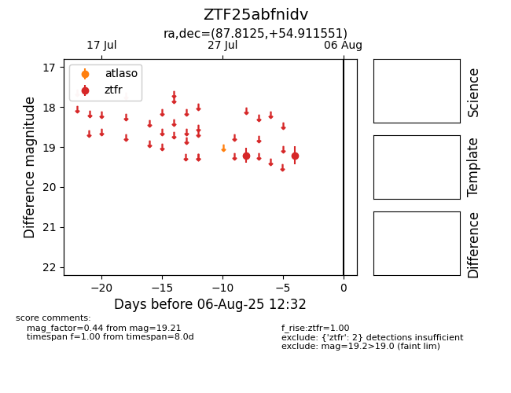

Target ZTF25abfnidv at 2025-08-06 17:07, see:
FINK: fink-portal.org/ZTF25abfnidv
Lasair: lasair-ztf.lsst.ac.uk/objects/ZTF25abfnidv
ALeRCE: alerce.online/object/ZTF25abfnidv
alt names
ZTF25abfnidv (ztf,fink)
coordinates:
equatorial (ra, dec) = (87.8125,+54.91155)
galactic (l, b) = (157.8139,+13.90417)
photometry
last ztfr=19.21
2 ztfr detections
